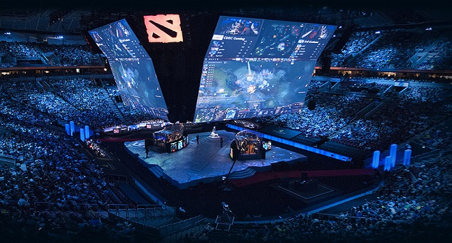
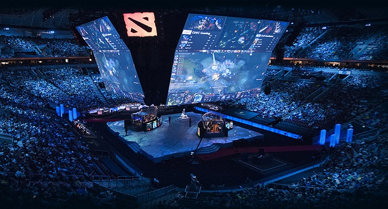

RAČUNALNE
IGRE
eSport
 Esports ili elektronički sportovi su oblik natjecanja u video igrama, najčešće između profesionalaca. Obje igrice su u sastavu esporta. Trenutno je uz ove dvije igrice još 42 igrice u sastavu esporta. 2016. godine esport je imao prihod od skoro 500 tisuća dolara od čega su ove dvije igre doprinjele sa skoro 100 tisuća, to je gotovo petina prihoda od samo dvije od 44 igre na popisu. Te brojke govore koliko su MOBA-e popularne. Iste te godine je lol imao 1718 turnira na kojima je sudjelovalo preko 4000 igraca, dok je dota imala 613 turnira sa nesto manje od 1500 igrača ukupno. Usprkos manjem broju turnira i igrača, dota je pridonijela više od 2 puta više prihoda od lol-a. Kao što možete vidjeti na slikama u nastavku, iako se radi o igrama, natjecanja su postala toliko popularna da se stadijoni napune kao kod bilo kojeg drugog sporta.

Esports ili elektronički sportovi su oblik natjecanja u video igrama, najčešće između profesionalaca. Obje igrice su u sastavu esporta. Trenutno je uz ove dvije igrice još 42 igrice u sastavu esporta. 2016. godine esport je imao prihod od skoro 500 tisuća dolara od čega su ove dvije igre doprinjele sa skoro 100 tisuća, to je gotovo petina prihoda od samo dvije od 44 igre na popisu. Te brojke govore koliko su MOBA-e popularne. Iste te godine je lol imao 1718 turnira na kojima je sudjelovalo preko 4000 igraca, dok je dota imala 613 turnira sa nesto manje od 1500 igrača ukupno. Usprkos manjem broju turnira i igrača, dota je pridonijela više od 2 puta više prihoda od lol-a. Kao što možete vidjeti na slikama u nastavku, iako se radi o igrama, natjecanja su postala toliko popularna da se stadijoni napune kao kod bilo kojeg drugog sporta.
